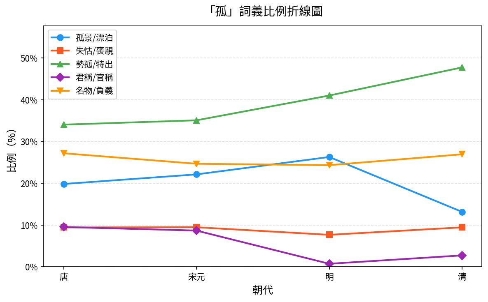
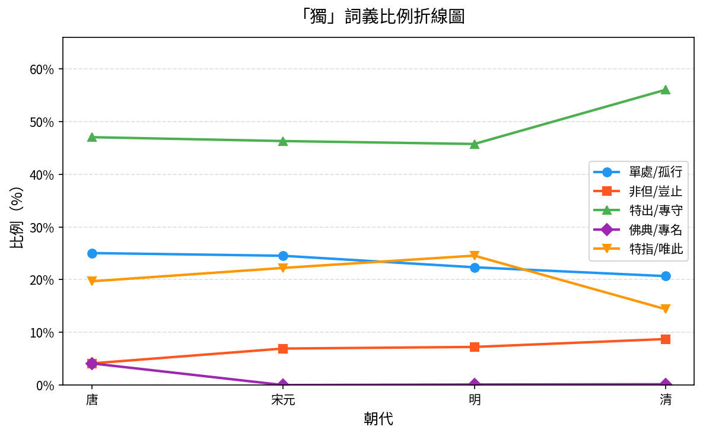
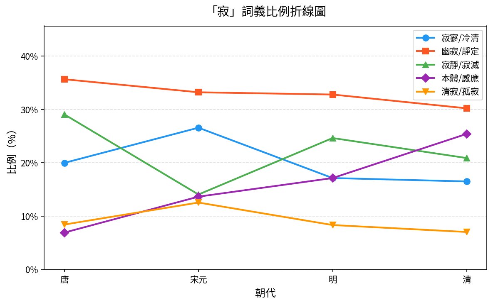
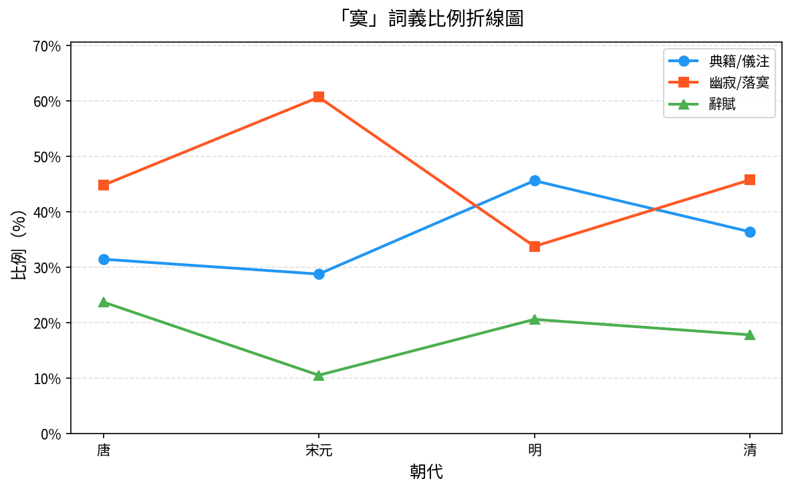
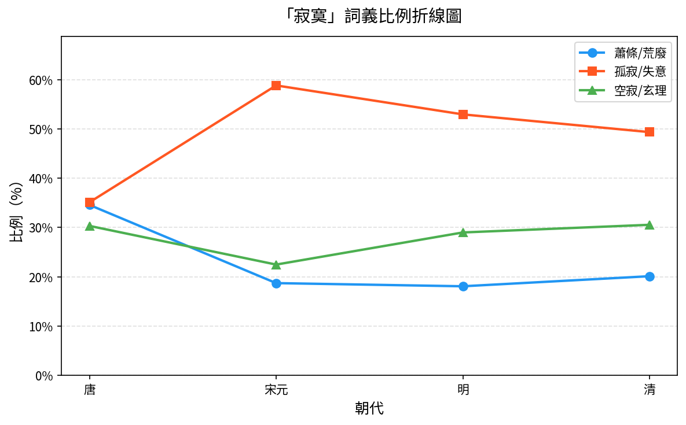
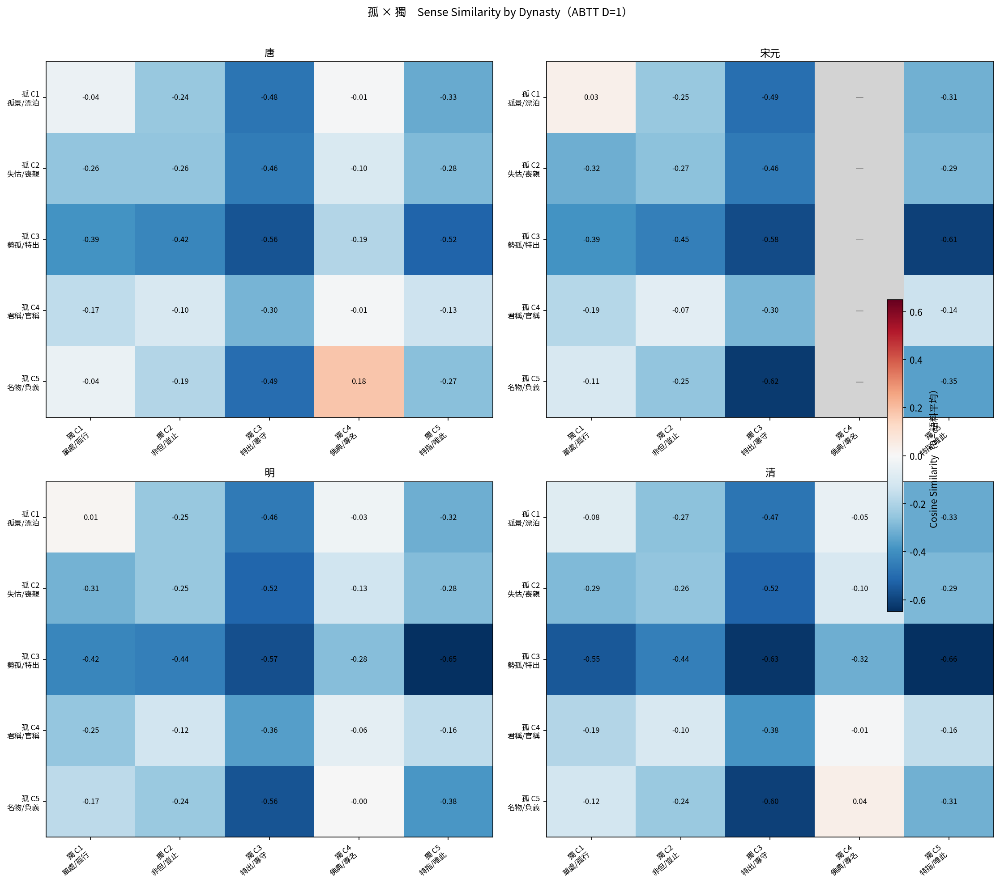
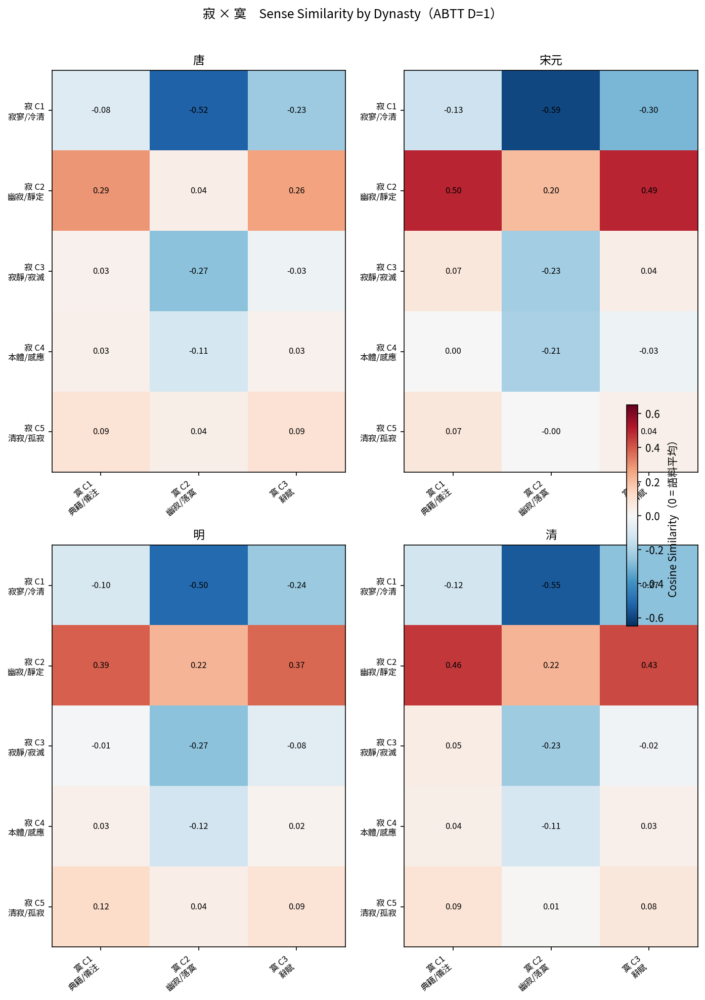
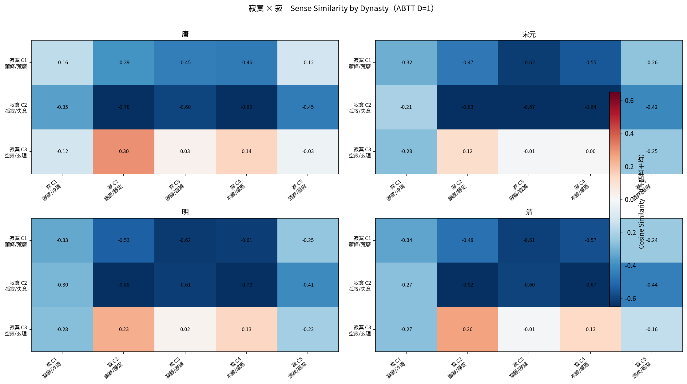
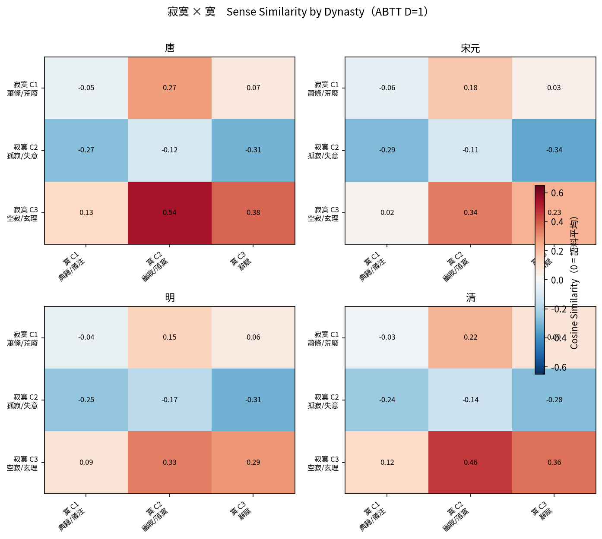

本研究以「孤」、「獨」、「寂」、「寞」及「寂寞」五個漢語詞彙為對象，以涵蓋唐至清的大規模傳世文獻為語料， 利用預訓練模型擷取各字的語境特徵，並將用法相近的例句聚合成群。 歸納完成後，以 大型語言模型（LLM） 輔助研究者閱讀語境例句、為各群命名， 從而追蹤這五個詞在唐、宋元、明、清四個朝代區間的語義歷時演變。
本研究使用自建的 Historical Chinese Corpus 語料庫，語料整合自以下三個資料庫：
| 詞 | 群數 | 分群語義標籤 |
|---|---|---|
| 孤 | 5 | C1 孤景/漂泊 C2 失怙/喪親 C3 勢孤/特出 C4 君稱/官稱 C5 名物/負義 |
| 獨 | 5 | C1 單處/孤行 C2 非但/豈止 C3 特出/專守 C4 佛典/專名 C5 特指/唯此 |
| 寂 | 5 | C1 寂寥/冷清 C2 幽寂/靜定 C3 寂靜/寂滅 C4 本體/感應 C5 清寂/孤寂 |
| 寞 | 3 | C1 典籍/儀注 C2 幽寂/落寞 C3 辭賦 |
| 寂寞 | 3 | C1 蕭條/荒廢 C2 孤寂/失意 C3 空寂/玄理 |
各語義群在四個朝代區間語料中的比例分佈（%）





各語義群兩兩之間的語義相似程度，依四個朝代分別呈現。紅色愈深代表兩群用法愈接近，藍色代表差異愈大。

整體格局：矩陣幾乎全面負值，顯示「孤」「獨」雖語義相關，在語境分佈上卻高度分離，兩字並非可互換的同義詞。

整體格局：矩陣呈現鮮明的結構分化——寂C2（幽寂／靜定）是唯一與寞三群均呈正值的列，其餘寂語義群與寞C2（幽寂／落寞）全面負值。兩字雖共享孤寂語義，語境分佈卻高度分離，交集幾乎收斂於「靜定」一義。

整體格局：矩陣幾乎全面負值，顯示「寂寞」作為複合詞已高度詞彙化，與單字「寂」的語境分佈全面分離。唯一的例外是寂寞C3（空寂／玄理）× 寂C2（幽寂／靜定），呈持續正值，是兩者語境的唯一橋樑。換言之，寂寞的詞彙化是透過「情感義」完成的，哲學義則是還沒有完全分開的那條線。

整體格局：與「寂寞×寂」明顯不同，此矩陣呈現較多正值，顯示「寂寞」與單字「寞」保有較多語境交集。寂寞C3（空寂／玄理）與寞三群全面正值，寂寞C1（蕭條／荒廢）× 寞C2（幽寂／落寞）亦持續正值；只有寂寞C2（孤寂／失意）整列負值，延續了詞彙化後情感義的語境分離。
各朝代語料中，與關鍵詞最常同時出現（前後各 10 字以內）的 10 個字
C1 孤景／漂泊
| 朝代 | top-10 搭配字 頻率高→低 | 新進入 | 消失 |
|---|---|---|---|
| 唐 | 雲(93) 山(80) 月(65) 人(60) 一(59) 風(52) 天(50) 水(49) 日(46) 舟(44) | — | — |
| 宋元 | 雲(115) 山(101) 人(78) 城(62) 一(61) 水(61) 舟(58) 詩(56) 風(55) 月(52) | 城 詩 | 天 日 |
| 明 | 雲(105) 月(104) 山(91) 水(77) 一(73) 江(65) 上(65) 舟(62) 夜(60) 日(59) | 上 夜 日 江 | 人 城 詩 風 |
| 清 | 雲(61) 一(59) 山(55) 峰(49) 月(44) 人(34) 風(30) 天(28) 上(28) 水(28) | 人 天 峰 風 | 夜 日 江 舟 |
C2 失怙／喪親
| 朝代 | top-10 搭配字 頻率高→低 | 新進入 | 消失 |
|---|---|---|---|
| 唐 | 子(54) 人(50) 曰(39) 母(39) 父(37) 少(34) 年(29) 某(26) 公(24) 養(22) | — | — |
| 宋元 | 人(48) 十(44) 年(43) 諸(41) 子(40) 公(33) 父(30) 君(29) 先(27) 月(25) | 先 十 君 月 諸 | 少 曰 某 母 養 |
| 明 | 子(28) 人(27) 母(26) 諸(25) 少(24) 曰(21) 生(21) 遺(20) 父(20) 先(20) | 少 曰 母 生 遺 | 公 十 君 年 月 |
| 清 | 母(49) 人(47) 子(46) 撫(43) 年(38) 十(38) 少(35) 氏(34) 生(26) 曰(24) | 十 年 撫 氏 | 先 父 諸 遺 |
C3 勢孤／特出
| 朝代 | top-10 搭配字 頻率高→低 | 新進入 | 消失 |
|---|---|---|---|
| 唐 | 人(96) 曰(93) 子(87) 一(68) 何(67) 獨(62) 山(61) 相(60) 生(58) 自(57) | — | — |
| 宋元 | 人(103) 一(92) 山(83) 自(77) 天(70) 子(65) 立(65) 臣(57) 下(55) 生(53) | 下 天 立 臣 | 何 曰 獨 相 |
| 明 | 人(122) 一(122) 月(108) 日(87) 時(84) 山(79) 子(75) 自(71) 如(70) 生(68) | 如 日 時 月 | 下 天 立 臣 |
| 清 | 一(163) 人(108) 山(107) 天(91) 行(87) 上(83) 中(79) 生(79) 如(75) 子(74) | 上 中 天 行 | 日 時 月 自 |
C4 君稱／官稱
| 朝代 | top-10 搭配字 頻率高→低 | 新進入 | 消失 |
|---|---|---|---|
| 唐 | 卿(95) 公(89) 三(85) 大(68) 曰(57) 子(47) 命(47) 王(46) 下(34) 諸(32) | — | — |
| 宋元 | 卿(108) 大(91) 三(65) 公(62) 命(57) 子(49) 曰(48) 侯(43) 王(41) 諸(38) | 侯 | 下 |
| 明 | 曰(9) 君(6) 利(5) 明(4) 于(4) 子(4) 敢(3) 公(3) 益(3) 人(3) | 于 人 利 君 敢 明 益 | 三 侯 卿 命 大 王 諸 |
| 清 | 大(21) 曰(21) 君(19) 卿(16) 公(15) 子(13) 禮(11) 國(10) 于(10) 必(10) | 卿 國 大 必 禮 | 人 利 敢 明 益 |
C5 名物／負義
| 朝代 | top-10 搭配字 頻率高→低 | 新進入 | 消失 |
|---|---|---|---|
| 唐 | 獨(298) 在(112) 時(110) 給(106) 國(106) 一(99) 園(99) 佛(99) 樹(87) 舍(85) | — | — |
| 宋元 | 山(117) 獨(97) 一(72) 人(66) 自(52) 子(51) 大(50) 是(41) 立(40) 詩(39) | 人 大 子 山 是 立 自 詩 | 佛 國 園 在 時 樹 給 舍 |
| 明 | 山(183) 云(112) 曰(82) 負(76) 一(71) 人(64) 師(59) 是(58) 月(53) 自(49) | 云 師 曰 月 負 | 大 子 獨 立 詩 |
| 清 | 負(104) 獨(97) 寡(89) 曰(83) 一(75) 子(67) 山(66) 大(62) 人(61) 是(59) | 大 子 寡 獨 | 云 師 月 自 |
C1 單處／孤行
| 朝代 | top-10 搭配字 頻率高→低 | 新進入 | 消失 |
|---|---|---|---|
| 唐 | 孤(152) 人(101) 行(70) 一(63) 曰(63) 如(60) 是(59) 覺(55) 上(51) 處(48) | — | — |
| 宋元 | 詩(108) 人(90) 子(75) 立(66) 孤(64) 一(64) 天(56) 行(53) 自(50) 中(47) | 中 天 子 立 自 詩 | 上 如 是 曰 處 覺 |
| 明 | 人(71) 一(69) 天(56) 坐(55) 日(54) 覺(54) 自(47) 山(46) 時(46) 我(46) | 坐 山 我 日 時 覺 | 中 子 孤 立 行 詩 |
| 清 | 一(88) 孤(76) 人(60) 曰(58) 上(57) 覺(57) 自(56) 天(54) 中(45) 我(43) | 上 中 孤 曰 | 坐 山 日 時 |
C2 非但／豈止
| 朝代 | top-10 搭配字 頻率高→低 | 新進入 | 消失 |
|---|---|---|---|
| 唐 | 非(35) 知(17) 人(16) 行(13) 如(12) 何(12) 言(11) 二(11) 是(10) 在(9) | — | — |
| 宋元 | 非(48) 人(41) 子(24) 是(23) 哉(22) 何(17) 大(16) 一(16) 如(14) 利(14) | 一 利 哉 大 子 | 二 在 知 行 言 |
| 明 | 一(40) 非(39) 哉(35) 是(26) 人(24) 生(16) 法(15) 能(15) 得(14) 心(14) | 得 心 法 生 能 | 何 利 大 如 子 |
| 清 | 一(37) 人(37) 非(30) 子(23) 見(22) 天(19) 是(18) 我(18) 事(17) 生(16) | 事 天 子 我 見 | 哉 得 心 法 能 |
C3 特出／專守
| 朝代 | top-10 搭配字 頻率高→低 | 新進入 | 消失 |
|---|---|---|---|
| 唐 | 人(189) 一(153) 行(150) 是(149) 子(125) 我(122) 得(112) 時(111) 自(111) 如(108) | — | — |
| 宋元 | 人(180) 一(122) 子(115) 能(103) 得(100) 天(93) 是(89) 曰(87) 道(83) 故(81) | 天 故 曰 能 道 | 如 我 時 自 行 |
| 明 | 人(164) 一(164) 中(104) 生(103) 是(101) 故(97) 得(89) 如(88) 自(87) 行(83) | 中 如 生 自 行 | 天 子 曰 能 道 |
| 清 | 一(204) 人(200) 故(116) 中(115) 上(104) 大(98) 子(96) 曰(90) 何(89) 見(87) | 上 何 大 子 曰 見 | 如 得 是 生 自 行 |
C4 佛典／專名
| 朝代 | top-10 搭配字 頻率高→低 | 新進入 | 消失 |
|---|---|---|---|
| 唐 | 佛(87) 時(84) 祇(83) 樹(83) 國(83) 給(82) 孤(82) 園(82) 舍(79) 衛(79) | — | — |
| 宋元 | — | — | 佛 國 園 孤 時 樹 祇 給 舍 衛 |
| 明 | 佛(2) 在(2) 給(2) 孤(2) 園(2) 沙(1) 門(1) 釋(1) 義(1) 淨(1) | 佛 園 在 孤 沙 淨 給 義 釋 門 | — |
| 清 | 在(3) 給(3) 孤(3) 園(3) 大(3) 眾(2) 千(2) 二(2) 百(2) 五(2) | 二 五 千 大 百 眾 | 佛 沙 淨 義 釋 門 |
C5 特指／唯此
| 朝代 | top-10 搭配字 頻率高→低 | 新進入 | 消失 |
|---|---|---|---|
| 唐 | 王(96) 人(95) 曰(90) 子(71) 何(67) 皆(58) 下(51) 臣(42) 一(41) 諸(40) | — | — |
| 宋元 | 人(117) 何(94) 子(78) 一(61) 皆(55) 可(51) 曰(47) 言(43) 哉(43) 書(37) | 可 哉 書 言 | 下 王 臣 諸 |
| 明 | 人(118) 何(86) 曰(75) 子(62) 公(61) 一(60) 可(57) 能(46) 天(45) 生(41) | 公 天 生 能 | 哉 書 皆 言 |
| 清 | 皆(62) 人(61) 曰(46) 何(46) 一(42) 言(39) 五(34) 子(30) 可(30) 上(29) | 上 五 皆 言 | 公 天 生 能 |
C1 寂寥／冷清
| 朝代 | top-10 搭配字 頻率高→低 | 新進入 | 消失 |
|---|---|---|---|
| 唐 | 寥(178) 人(80) 山(57) 空(44) 風(42) 一(42) 春(39) 曰(39) 花(38) 兮(37) | — | — |
| 宋元 | 寥(224) 人(109) 山(81) 春(78) 風(77) 一(76) 花(61) 落(54) 月(51) 日(45) | 日 月 落 | 兮 曰 空 |
| 明 | 寥(130) 人(63) 山(50) 莫(46) 花(36) 雲(35) 風(35) 中(34) 空(33) 天(33) | 中 天 空 莫 雲 | 一 日 春 月 落 |
| 清 | 寥(152) 一(58) 人(55) 山(52) 詩(41) 中(38) 風(35) 生(34) 雲(30) 聲(30) | 一 生 聲 詩 | 天 空 花 莫 |
C2 幽寂／靜定
| 朝代 | top-10 搭配字 頻率高→低 | 新進入 | 消失 |
|---|---|---|---|
| 唐 | 如(170) 來(131) 一(129) 人(127) 心(122) 是(108) 定(101) 行(93) 南(93) 諸(87) | — | — |
| 宋元 | 一(140) 人(101) 山(72) 如(59) 自(50) 空(50) 是(47) 生(46) 心(46) 中(45) | 中 山 生 空 自 | 來 南 定 行 諸 |
| 明 | 人(99) 一(88) 心(86) 山(65) 是(58) 空(58) 中(54) 道(54) 生(52) 滅(50) | 滅 道 | 如 自 |
| 清 | 一(101) 山(80) 人(60) 空(59) 聲(54) 如(50) 見(47) 中(46) 生(46) 天(46) | 天 如 聲 見 | 心 是 滅 道 |
C3 寂靜／寂滅
| 朝代 | top-10 搭配字 頻率高→低 | 新進入 | 消失 |
|---|---|---|---|
| 唐 | 滅(272) 如(205) 智(164) 是(138) 來(133) 法(131) 靜(119) 諸(104) 一(91) 已(83) | — | — |
| 宋元 | 滅(80) 子(58) 師(54) 大(52) 一(43) 道(43) 人(41) 是(29) 示(29) 二(28) | 二 人 大 子 師 示 道 | 來 如 已 智 法 諸 靜 |
| 明 | 滅(206) 法(136) 靜(112) 心(107) 一(102) 生(78) 佛(77) 如(75) 故(75) 十(69) | 佛 十 如 心 故 法 生 靜 | 二 人 大 子 師 是 示 道 |
| 清 | 滅(152) 示(92) 法(81) 十(76) 一(71) 師(69) 三(58) 曰(57) 大(57) 相(56) | 三 大 師 曰 相 示 | 佛 如 心 故 生 靜 |
C4 本體／感應
| 朝代 | top-10 搭配字 頻率高→低 | 新進入 | 消失 |
|---|---|---|---|
| 唐 | 照(38) 動(36) 故(34) 空(33) 常(27) 物(26) 心(23) 理(22) 是(21) 法(20) | — | — |
| 宋元 | 動(119) 感(86) 心(62) 天(60) 是(58) 一(50) 通(48) 照(44) 空(42) 道(40) | 一 天 感 通 道 | 常 故 法 物 理 |
| 明 | 照(95) 空(89) 動(85) 即(81) 故(74) 心(72) 相(67) 是(66) 非(63) 常(61) | 即 常 故 相 非 | 一 天 感 通 道 |
| 清 | 感(250) 體(140) 心(119) 動(117) 是(111) 本(109) 常(104) 一(99) 謂(96) 知(92) | 一 感 本 知 謂 體 | 即 故 照 相 空 非 |
C5 清寂／孤寂
| 朝代 | top-10 搭配字 頻率高→低 | 新進入 | 消失 |
|---|---|---|---|
| 唐 | 山(55) 人(49) 來(30) 空(30) 歸(24) 春(23) 青(21) 落(20) 花(20) 長(20) | — | — |
| 宋元 | 春(66) 人(56) 花(49) 山(45) 風(41) 落(34) 岑(28) 一(24) 月(23) 水(22) | 一 岑 月 水 風 | 來 歸 空 長 青 |
| 明 | 人(38) 山(30) 花(24) 春(21) 空(20) 愁(19) 風(19) 雲(18) 岑(18) 夜(18) | 夜 愁 空 雲 | 一 月 水 落 |
| 清 | 山(35) 人(30) 一(24) 月(23) 空(21) 雲(19) 中(18) 風(18) 青(17) 作(15) | 一 中 作 月 青 | 夜 岑 愁 春 花 |
C1 典籍／儀注
| 朝代 | top-10 搭配字 頻率高→低 | 新進入 | 消失 |
|---|---|---|---|
| 唐 | 一(34) 人(19) 大(18) 書(17) 曰(16) 事(14) 下(14) 公(14) 反(14) 酬(13) | — | — |
| 宋元 | 一(154) 日(64) 人(57) 事(54) 曰(53) 書(43) 二(42) 八(42) 子(40) 十(37) | 二 八 十 子 日 | 下 公 反 大 酬 |
| 明 | 一(247) 人(80) 日(73) 二(68) 八(62) 王(62) 上(55) 出(53) 酬(51) 口(50) | 上 出 口 王 酬 | 事 十 子 曰 書 |
| 清 | 一(223) 日(80) 十(62) 人(60) 口(60) 書(57) 文(51) 八(49) 二(47) 年(46) | 十 年 文 書 | 上 出 王 酬 |
C2 幽寂／落寞
| 朝代 | top-10 搭配字 頻率高→低 | 新進入 | 消失 |
|---|---|---|---|
| 唐 | 冥(99) 曰(57) 人(33) 一(29) 日(26) 君(25) 古(25) 作(23) 空(23) 言(22) | — | — |
| 宋元 | 索(311) 落(195) 一(194) 人(181) 作(164) 何(110) 山(110) 事(109) 寂(108) 冥(102) | 事 何 寂 山 索 落 | 古 君 日 曰 空 言 |
| 明 | 落(125) 索(104) 人(89) 山(64) 一(64) 天(56) 中(50) 子(47) 日(45) 君(43) | 中 君 天 子 日 | 事 何 作 冥 寂 |
| 清 | 一(167) 落(155) 冥(124) 寂(122) 索(115) 作(108) 人(101) 天(84) 惟(74) 山(73) | 作 冥 寂 惟 | 中 君 子 日 |
C3 辭賦
| 朝代 | top-10 搭配字 頻率高→低 | 新進入 | 消失 |
|---|---|---|---|
| 唐 | 一(38) 酬(15) 驪(12) 日(12) 鑿(11) 作(10) 蟲(10) 露(10) 反(10) 嗣(9) | — | — |
| 宋元 | 一(74) 口(24) 酬(23) 驪(19) 黼(18) 顯(18) 蟲(16) 山(15) 二(15) 醴(15) | 二 口 山 醴 顯 黼 | 作 反 嗣 日 鑿 露 |
| 明 | 一(158) 八(62) 酬(59) 口(45) 人(32) 川(31) 關(30) 靈(28) 山(27) 臺(26) | 人 八 川 臺 關 靈 | 二 蟲 醴 顯 驪 黼 |
| 清 | 一(86) 蠶(80) 臺(43) 翼(40) 作(36) 霆(35) 囂(34) 鑿(33) 靈(33) 韓(29) | 作 囂 翼 蠶 鑿 霆 韓 | 人 八 口 山 川 酬 關 |
C1 蕭條／荒廢
| 朝代 | top-10 搭配字 頻率高→低 | 新進入 | 消失 |
|---|---|---|---|
| 唐 | 山(107) 人(97) 曰(81) 日(73) 一(70) 何(67) 春(67) 秋(66) 落(59) 江(54) | — | — |
| 宋元 | 人(82) 山(74) 作(61) 一(61) 風(52) 花(43) 春(43) 時(41) 空(39) 夜(37) | 作 夜 時 空 花 風 | 何 日 曰 江 秋 落 |
| 明 | 人(77) 空(60) 花(60) 一(54) 山(54) 風(52) 秋(43) 日(39) 春(36) 中(36) | 中 日 秋 | 作 夜 時 |
| 清 | 人(90) 山(84) 一(83) 花(70) 空(61) 風(59) 月(46) 雲(45) 秋(45) 春(44) | 月 雲 | 中 日 |
C2 孤寂／失意
| 朝代 | top-10 搭配字 頻率高→低 | 新進入 | 消失 |
|---|---|---|---|
| 唐 | 人(134) 山(82) 一(74) 日(67) 春(59) 花(58) 風(58) 何(57) 夜(55) 空(54) | — | — |
| 宋元 | 人(298) 一(178) 山(176) 風(156) 春(149) 花(131) 空(124) 何(121) 來(109) 歸(106) | 來 歸 | 夜 日 |
| 明 | 人(247) 山(193) 一(138) 空(137) 風(136) 花(129) 何(113) 雲(111) 秋(110) 春(100) | 秋 雲 | 來 歸 |
| 清 | 山(200) 人(199) 一(154) 風(132) 花(123) 空(115) 春(113) 秋(103) 雲(97) 中(86) | 中 | 何 |
C3 空寂／玄理
| 朝代 | top-10 搭配字 頻率高→低 | 新進入 | 消失 |
|---|---|---|---|
| 唐 | 曰(89) 子(80) 作(69) 人(66) 一(50) 清(47) 可(46) 道(46) 生(45) 聲(44) | — | — |
| 宋元 | 濵(86) 人(61) 相(52) 子(45) 濱(45) 心(39) 一(39) 生(38) 作(38) 是(35) | 心 是 濱 濵 相 | 可 曰 清 聲 道 |
| 明 | 人(85) 一(69) 自(56) 空(55) 山(54) 子(50) 是(48) 可(48) 如(48) 能(46) | 可 如 山 空 能 自 | 作 心 濱 濵 生 相 |
| 清 | 一(99) 人(98) 山(77) 生(55) 何(54) 得(53) 門(52) 心(52) 來(51) 子(50) | 何 來 得 心 生 門 | 可 如 是 空 能 自 |
孤C5「佛樹給園舍」與獨C4「佛祇樹國給孤園舍衛」在宋元同時清空，兩字佛典語境的共同斷裂點。
孤C3「獨」(62)、獨C1「孤」(152)，宋元均大幅下降，清代獨C1「孤」復現(76)，呈 U 形軌跡。
寞C2「索」(311)「落」(195)宋元突增，「寂」(108)同步進入，是「寞」語義史最明顯的轉折點。
「感」(250)「體」(140)「本」(109)在清代全面高頻，宋明理學「寂感」概念持續活躍至清。
輸入古典漢語文段，由 LLM 自動標注所屬寂寞場景